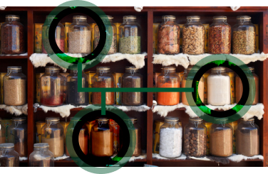
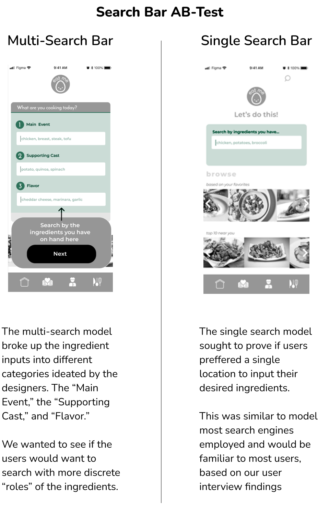
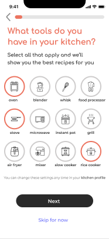

The task was to create a brand new mobile application that must solve a “real, clearly identified need in users’ everyday lives.” My Design group decided to create a recipe app that allows the users to search for recipes with the ingredients they have on hand.
I took on the role of head interviewer and contributed to the research and feature ideation for the mobile prototype.
Design Team: Pearle Palmer, Anna Louise Jionco, Sritharajan Koneru and Myself
From our interviews we learned that 4/6 of our subjects are very new to cooking and look to their recipe sources for a lot of direction.
Every subject rarely keeps phyisical copies of recipes and more often digitally save or backtrack their search history when trying to find a recipe they used in the past.
For the Who we looked at where the inspiration came from within our own research group. We decided to focus on young professionals, who cook and have a limited amount of time to prep and prepare meals.
This allowed us to search within our own social circles to conduct 6 user interviews to collect qualitative data.
When our users cook, for how long, and how often is important because it allowed us to prioritize those metrics in the design of the recipe layout and search function.
Our subjects’ cooking frequency varied, with all subjects cooking a minimum of 3 times a week, and a maximum of 14 times a week. With dinner being the most common meal they would utilize a recipe for.
Half of the subjects stated they look up recipes based on the cooking time, so that they can factor it in to their schedules. This made that input of the search function crucial to the overall design.
As to the where these users are searching for recipes, the interviewees stated that they primarly used search engines, social media and NOT recipe apps.
This helped the team understand that we needed to consider Indirect competitors such as Pinterest and SkinnyTaste along with the Direct competitors such as Yummly and Tasty.
The chart below details preferences mentioned at least twice from our user interviews .
They fit into 3 categories:
Search, Recipe Layout, and Personalization
To gain more data for us to prioritize product features, our team used a mix of quantitative and qualitative user research. We first started by sending out a survey to 56 participants through Facebook, with a relative distribution of males and females ranging from 18 - 35 years old.
The pie charts illustrate the most important factors that go into users choosing a recipe. The majority chose to have photos along with the recipe directions, to avoid ingredients they don’t like, and most of them didn’t want a social media aspect for a recipe mobile app either.
After we narrowed down the features that proved to be most important from our subjects input, it was time to synthesize these concepts into wireframes and then into a prototype.
For the search function we wanted to incorporate the following features:
The Search Bar and the Advanced Filters
We knew that we would incorporate the ability to search by specific ingredient, what we didn’t know what search bar design would be most preffered by the users.
Two different models were designed for an AB-test of two different methods of inputting ingredients.
AB Test Results: With a low-fidelity prototype, we tested a total of 6 users with 3 having the Multi-Search model and 3 having the Single-Search model.
Our results showed that all the users with Multi-Search model expressed audible confusion with the method and when asked would have preffered a single search bar.
Iterated Search Bar
Though the single-search model was deemed more user friendly, 2/3 subjects stated it was a still unclear exactly how the ingredients would be input. To tackle this, we decided to iterate with the use of search-suggestions and search-tags into the UI.
Advanced Search Filters
Once the user inputs at least one ingredient into the search bar they are prompted to either press “Find a Recipe” to generate their search results, or select the advanced filters button.
We tried to incorporate as many of the preferences we could generated from our user interviews and social media survey.
Users had few complaints or frustrations with the advanced filters screen, and so nothing was truly changed in later iterations thus far.
Based on our interviews and survey findings, we created a recipe display that encompassed as many of the desired features our subjects liked, while trying to avoid those that made recipe viewing frustrating.
Below is the iterated prototype, designed after conducting usibility tests with 6 subjects.
One of the greater advantages a recipe app has over other methods of recipe generation is the potential of personalization an account based application can have.
Through our user interviews, and competitive analysis, the design team chose features that allowed users to personalize their account that would give them curated results based on their dietary needs/preferences, a meaningful feed of recipes, and the ability to save recipes for later
The user’s personalization starts after they first sign up for the app, with a series of questions inteded to gather inputs to populate their “My Kitchen Profile.”
Here the users will select the cooking tools and appliances they currently own, their dietary preferences, dislikes and allergies.
Once the user is onboarded they can change their preferences in the “My Kitchen Profile” page along with a preffered calories per serving and cook time for their home screen feed.
Once the users have customized their “My Kitchen” profile, they would be allowed into the home screen which were a feed of suggested recipes would populate based on those inputs and the recipes they would save.
The “Saved” page will house the archived recipes the user would select while browsing the feed on the home page, or while using the search function.
What is an app without a great footer?
The app footer houses all of the pages explained above.
Users can change their preferences in the kitchen profile, the look at the feed using the home tab and access their archive of saved recipes in the saved tab